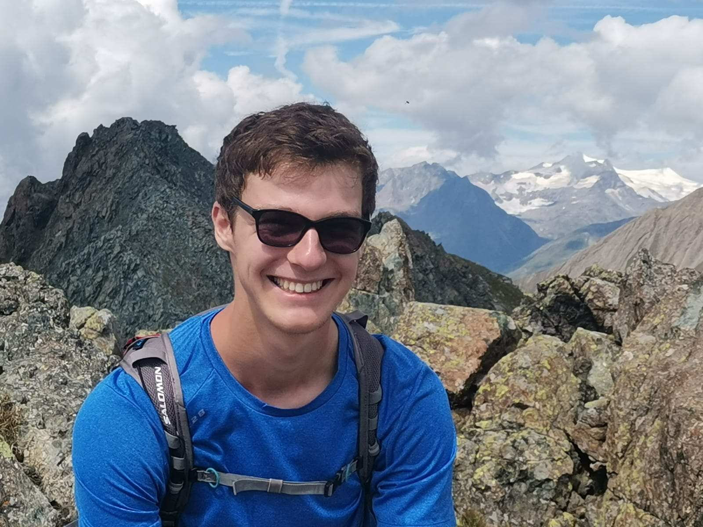

Climate change, land-use change, and anthropogenic impacts on ecological dynamics
About Me

I am currently in the second year of a Master's degree in Biodiversity, Ecology, and Evolution at Paris-Saclay University (France), with a specialization in theoretical ecology and ecological modelling.
I am also enrolled in the Magistère de Biologie, a selective program designed to prepare students for careers in research or scientific consulting, including training in project management, funding applications, and research development.
Current situation :
Gap year during my Master's program to deepen my skills in ecological modelling and population dynamics.
What I Am Looking For
Research Internship Opportunity
Seeking a six-month research internship starting in December 2026 to complete my Master's degree, focusing on theoretical and/or modelling approaches in population dynamics.
Topics of interest include metapopulation dynamics, connectivity, eco-evolutionary dynamics, and marine ecology.
With the perspective of pursuing a PhD following the internship.
If you are interested in hosting me for an internship, please feel free to contact me.
Research Interests
Research Areas
Population & Community Ecology
Metapopulation and spatial dynamics, Eco-evolutionary dynamics, Connectivity and dispersal processes
Biological Invasions & Biogeography
Species distribution modelling, Invasion dynamics, Island biogeography
Marine Ecology
Coral reef ecology, Marine protected areas, Coastal ecosystem dynamics
Transversal Perspectives
Human-driven pressures as ecological drivers
Conservation & Ecosystem Management
Applied theoretical ecology for conservation planning and ecosystem management
High-stakes Ecological Systems
Application of theory to systems where ecological stakes and human impacts are high (e.g., marine ecosystems, primary forests)
For more details, see Research.